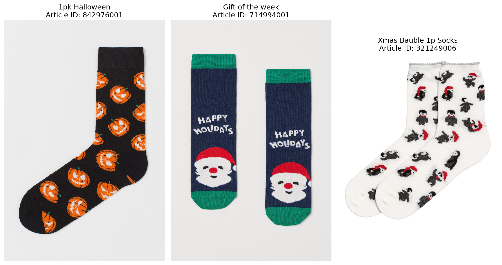
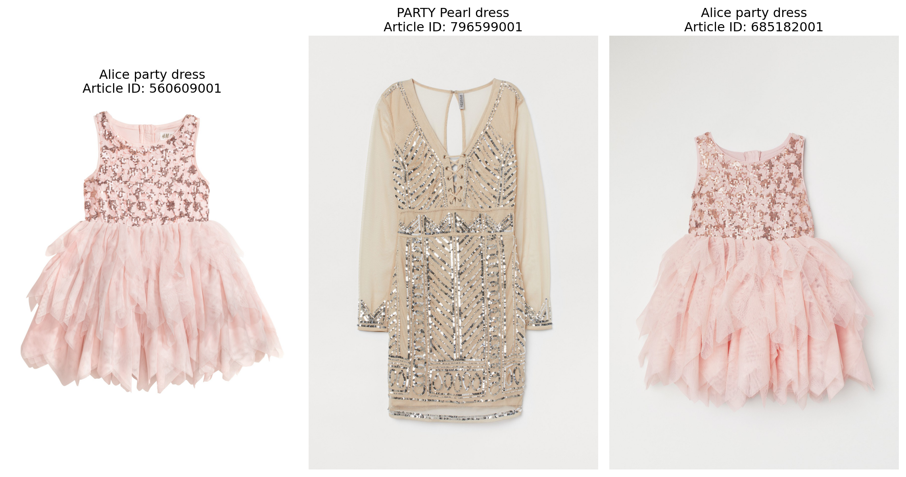

import os
import io
import sys
from contextlib import contextmanager
import warnings
os.environ['KAGGLE_USERNAME'] = 'calvinw'
os.environ['KAGGLE_KEY'] = 'b9096f0f988cca2a5d0402a878e8607a'
from kaggle.api.kaggle_api_extended import KaggleApi
api = KaggleApi()
api.authenticate()
@contextmanager
def suppress_all_output():
"""
A context manager that suppresses all output including stdout, stderr, and warnings.
"""
# Save the original stdout, stderr, and warnings settings
old_stdout = sys.stdout
old_stderr = sys.stderr
warnings.filterwarnings('ignore')
# Create a dummy io stream
dummy = io.StringIO()
try:
# Redirect all output to the dummy stream
sys.stdout = dummy
sys.stderr = dummy
yield
finally:
# Restore original settings
sys.stdout = old_stdout
sys.stderr = old_stderr
warnings.resetwarnings()Semantic Search of HM Dresses
import numpy as np
import pandas as pd
from sentence_transformers import SentenceTransformer
from pathlib import Path
import time
from collections import Counter
from io import StringIO
from io import BytesIO
from typing import List, Tuple
import requests
from PIL import Image
import matplotlib.pyplot as plt
from IPython.display import display, Markdowndef download_specific_image(article_id: str) -> str:
"""
Download a specific image file from the H&M dataset.
Parameters:
article_id: The article ID (will be padded to 10 digits)
Returns:
Path to the downloaded file
"""
# Pad the article ID to 10 digits
padded_id = f"{int(article_id):010d}"
# Get the subfolder name (first 3 digits of padded article ID)
subfolder = padded_id[:3]
# Construct the path within the dataset
image_path = f"images/{subfolder}/{padded_id}.jpg"
with suppress_all_output():
api.competition_download_file('h-and-m-personalized-fashion-recommendations', image_path)
return f"{padded_id}.jpg"class ProductSearcher:
def __init__(self, embeddings_url: str = "https://github.com/calvinw/semantic-search/raw/refs/heads/main/product_embeddings.npz"):
"""Initialize the searcher with embeddings from GitHub URL."""
print("Downloading embeddings file from GitHub...")
try:
response = requests.get(embeddings_url)
response.raise_for_status()
# Load the embeddings from the downloaded content
print("Loading embeddings and model...")
self.data = np.load(BytesIO(response.content), allow_pickle=True)
self.embeddings = self.data['embeddings']
self.product_names = self.data['product_names']
self.embedding_strings = self.data['embedding_strings']
self.product_codes = self.data['product_codes']
self.article_ids_str = self.data['article_ids_str']
# Load the model
print("Loading sentence transformer model...")
self.model = SentenceTransformer('all-MiniLM-L6-v2')
print("Model loaded successfully!")
print(f"Loaded {len(self.embeddings)} products")
except Exception as e:
print(f"Error in initialization: {e}")
raise
def get_article_image(self, article_id: str) -> Image.Image:
"""Load image for a given article ID."""
with suppress_all_output():
download_specific_image(article_id)
padded_id = f"{int(article_id):010d}"
image_path = f"{padded_id}.jpg"
try:
return Image.open(image_path)
except Exception as e:
print(f"Could not load image for article ID {article_id} (padded: {padded_id}): {e}")
return None
def search(self, query: str, top_k: int = 4) -> List[Tuple[int, float]]:
"""Search for products using a text query."""
query_embedding = self.model.encode([query])[0]
similarities = np.dot(self.embeddings, query_embedding) / (
np.linalg.norm(self.embeddings, axis=1) * np.linalg.norm(query_embedding)
)
top_idx = np.argsort(similarities)[::-1][:top_k]
return [(idx, similarities[idx]) for idx in top_idx]
def print_search_results(self, query: str, top_k: int = 3):
"""Perform search and print results with images in a readable format using Markdown."""
# Display header
display(Markdown(f"""
# Search Results
## Query: "{query}"
"""))
results = self.search(query, top_k)
images_to_display = []
titles = []
# Display results in Markdown format
for idx, score in results:
markdown_result = f"""
### Match Score: {score:.3f}
**Product Name:** {self.product_names[idx]}
**Product Code:** `{self.product_codes[idx]}`
**Article IDs:** `{self.article_ids_str[idx]}`
**Description:**
{self.embedding_strings[idx]}
---
"""
display(Markdown(markdown_result))
# Collect image and title information
first_article_id = self.article_ids_str[idx].split(',')[0]
with suppress_all_output():
img = self.get_article_image(first_article_id)
if img is not None:
images_to_display.append(img)
titles.append(f"{self.product_names[idx]}\nArticle ID: {first_article_id}")
# Display images
if images_to_display:
fig = plt.figure(figsize=(12, 8))
for i, (img, title) in enumerate(zip(images_to_display, titles), 1):
plt.subplot(1, len(images_to_display), i)
plt.imshow(img)
plt.title(title, wrap=True)
plt.axis('off')
plt.tight_layout()
display(plt.gcf())
plt.close()
searcher = ProductSearcher()Downloading embeddings file from GitHub...
Loading embeddings and model...
Loading sentence transformer model...
Model loaded successfully!
Loaded 47224 productssearcher.print_search_results("Socks for holiday")
searcher.print_search_results("A party dress for office party")Search Results
Query: “Socks for holiday”
Match Score: 0.614
Product Name: 1pk Halloween
Product Code: 842976
Article IDs: 842976001,842976002,842976005,842976008
Description:
1pk Halloween | Socks | [Colors: Black, Orange] [Patterns: All over pattern] | Socks in a soft, jacquard-knit cotton blend with elasticated tops.
Match Score: 0.599
Product Name: Gift of the week
Product Code: 714994
Article IDs: 714994001,714994002
Description:
Gift of the week | Socks | [Colors: Dark Blue, Red] [Patterns: All over pattern] | Jacquard-knit socks in a soft cotton blend.
Match Score: 0.597
Product Name: Xmas Bauble 1p Socks
Product Code: 321249
Article IDs: 321249006,321249007,321249009,321249010
Description:
Xmas Bauble 1p Socks | Socks | [Colors: Dark Red, Grey, Red, White] [Patterns: All over pattern] | Socks in a jacquard-knit cotton blend supplied in a transparent plastic Christmas tree bauble.

Search Results
Query: “A party dress for office party”
Match Score: 0.662
Product Name: Alice party dress
Product Code: 560609
Article IDs: 560609001
Description:
Alice party dress | Dress | [Colors: Light Pink] [Patterns: Lace] | Sleeveless dress with a sequined lace bodice, a visible zip at the back and flared skirt in several layers of tulle. Lined.
Match Score: 0.653
Product Name: PARTY Pearl dress
Product Code: 796599
Article IDs: 796599001
Description:
PARTY Pearl dress | Dress | [Colors: Light Beige] [Patterns: Sequin] | Short, fitted dress in mesh with sequined embroidery on the front. Deep V-neck with decorative lacing at the top, an opening at the back with a hook-and-eye fastening at the back of the neck, and a concealed zip at the back. Long sleeves with sequined embroidery at the cuffs. Partly lined.
Match Score: 0.646
Product Name: Alice party dress
Product Code: 685182
Article IDs: 685182001
Description:
Alice party dress | Dress | [Colors: Light Pink] [Patterns: Lace] | Sleeveless tulle dress with a sequin-embroidered lace bodice, and a zip at the back. Seam at the waist and a flared skirt in several asymmetric, layered tiers. Lined.
